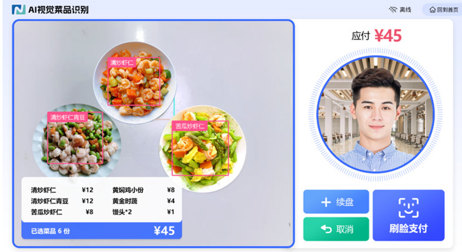
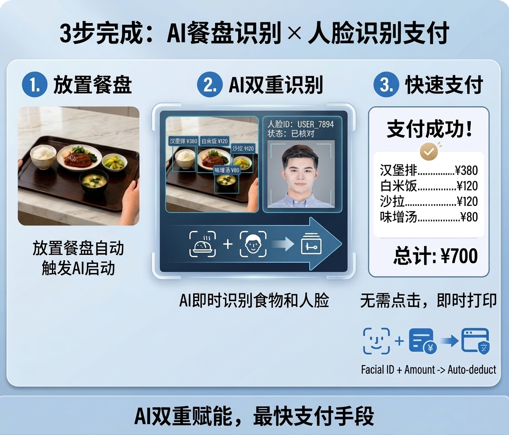

AI瞬间识别菜品。
菜品AI识别与人脸识别同时进行，实现最快结算。
AI摄像头自动识别托盘上的菜品，瞬间计算品目与金额，无需专用餐具。
菜品识别×人脸识别同时进行，最快结算
无需专用餐具
约1秒完成识别
营养数据自动分析

AI图像识别的工作原理
只需将托盘放上即可自动识别菜品。菜品识别与人脸识别同时进行，实现最快结算。
菜品AI识别与人脸识别同时进行，实现业界最快结算。
从放置托盘到完成支付仅需3秒！

AI结算终端产品线
根据食堂规模和布局，可从四种类型中选择。

AI结算终端（宽体型）
搭载2个识别区域的高处理能力型号。
适用于大规模食堂及高峰时段的大量处理需求。
- 15.6英寸双屏触控显示
- 一次可同时识别8个以上菜品
- 1秒内完成识别
- IC卡 / QR码 / 人脸识别支付

AI结算终端（紧凑型）
紧凑纤薄设计的自助机型。
最适合中小规模食堂及空间有限的场所。
- 21.6英寸主屏 + 侧面板
- 紧凑设计，节省空间
- 灵活安装，不挑场地
- IC卡 / QR码 / 人脸识别支付

AI结算终端（新款1）
搭载8寸触摸屏的紧凑机型。
人脸识别、扫码、刷卡支付一体化集成。
- 8寸触摸屏
- 人脸摄像头、扫码、刷卡集成一体化
- WiFi、蓝牙、有线网络
- 200万像素红外双目摄像头
- 500万像素菜品识别摄像头

AI结算终端（新款2）
搭载11.6寸触摸屏的紧凑机型。
人脸识别、扫码、刷卡支付一体化集成。
- 11.6寸触摸屏
- 人脸摄像头、扫码、刷卡集成一体化
- WiFi、蓝牙、有线网络
- 200万像素红外双目摄像头
- 500万像素菜品识别摄像头
主要特点
无需专用餐具
可直接使用现有餐具，无需更换专用餐具。大幅降低导入成本。
高速识别
约1秒完成菜品识别和金额计算。大幅缩短高峰时段排队时间，减轻用餐者压力。
营养分析
自动计算所选菜品的营养成分（卡路里、盐分、蛋白质等）。助力员工健康管理。
PC管理平台
通过网页浏览器统一管理商品管理、订单管理、销售分析、设备管理。大幅提升运营效率。
多样化支付
支持人脸识别、QR码、IC卡。无现金运营，实现卫生且高效的结算。
数据活用
销售额、菜品人气度、高峰时段分析等，利用积累的数据改善食堂运营。
技术规格
AI结算终端主要规格
| 项目 | 规格 |
|---|---|
| CPU | 64位8核CPU, 6T NPU |
| 存储 | 16G FLASH, 4G DDR4 |
| 显示屏 | 主屏: 15.6英寸 1080P 触控屏 / 副屏: 15.6英寸 1080P 触控屏 |
| QR扫描 | QR Code, Code 128/39等，支持360°旋转读取 |
| 人脸识别摄像头 | 双红外摄像头，200万像素 |
| 菜品识别摄像头 | 500万像素 |
| 非接触式卡 | M1/CPU卡，ISO/IEC14443兼容 |
| 通信 | Ethernet 10/100Mbps, WiFi 2.4GHz, Bluetooth 4.0 |
| 电源 | AC220V输入, DC12V/5A输出 |
| 工作环境 | -10℃～50℃, 湿度10～93% |
| 外形尺寸 | 1475 × 650 × 1100mm |
导入效果
削减收银人员
每个窗口减少1～2名人工成本。有效缓解长期人手不足问题。
结算速度提升
大幅缩短高峰时段排队时间。让员工更有效利用午休时间。
结算零失误
AI自动计算消除人工计算错误。实现准确的结算处理。
减少食品浪费
通过数据分析实现精准备餐计划，减少食品废弃，降低环境负荷。